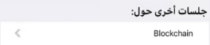

Boolean value that indicates whether the image should be flipped in a right-to-left layout. Values
Scope Objects: Image Description
In RTL languages, some images need to be flipped horizontally, and others don't. For example, Foreign Key pickers and selectors should be automatically flipped depending on the selected language. With this property, the developer can flip elements as needed. Samples
Consider the disclosure indicator image LTR Language > RTL Language < At Runtime for RTL it is displayed as follows:  AvailabilityThis property is available since GeneXus 16 upgrade 4. |